Additional help may be available online here.
KosmicTask Help v1.0.1
About KosmicTask
KosmicTask is an automation provider. Using KosmicTask you can create, edit and publish automation tasks that can be accessed either locally or remotely. And because KosmicTask uses AppleScript to power its tasks any existing scripts can be quickly and easily incorporated into KosmicTask and made available from a central location.
KosmicTask provides the following basic functionality:
- A central repository of AppleScript powered tasks.
- A publishing idiom that allows for public and trusted user access to tasks.
- Secure network communication via SSL.
- Bonjour support for automatic discovery over local networks.
- Support for task sharing over the Internet.
- A multi-tabbed iTunes like interface.
- A comprehensive history of task requests and results.
- Local and remote task editing and configuration.
- Integrated file transfer capabilities.
- Flexible representation of task results.
- Full local and remote search capabilities.
- Run task server at login functionality.
- Integrated error console.
Main Window Layout
The main KosmicTask window contains the toolbar and four distinct panes.
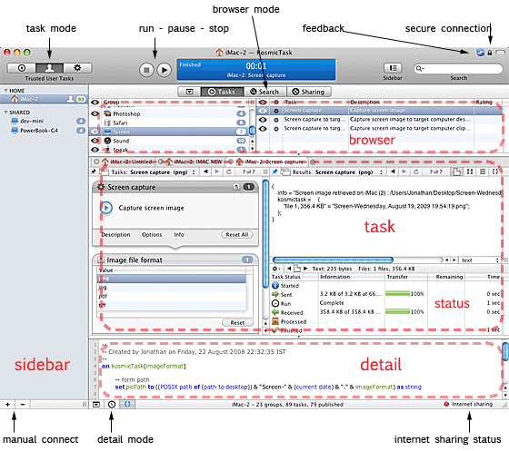
Browser Pane - Top
The browser mode control at the top of the pane determines the browser contents.
- Browser hide
- Hides the browser pane.
- Task browser
- Displays a list of available tasks
- Search result browser.
- Displays a list of search results.
- Sharing information browser
- Displays network sharing information.
Task Pane - Middle
The task pane displays the current task and results.
- Tabs
- Each task has its own tab containing a task view. The task view displays task input on the left and results on the right.
- To create a new tab click the + button. To close click x.
- To open a particular task in a new tab command-click the task in the browser.
- To open a task in a new window use alt-click. Alternatively use the task browser context menu.
- Drag the tabs to reorder.
- Task Navigation Bar
- Provides navigation functionality within the task tab.
- Task View - Left
- Displays the detail of the currently selected task along with any inputs.
- Result View - Right
- Displays the results of task execution. If no task has been executed then the view will display "ready". When a task is executing the view will display "running".
- Task Status - Lower
- Displays the current execution status of the task. While a task is running it will display the elapsed time and network/file transfer activity. If an error occurs during task execution it will be reported here.
Detail Pane - Bottom
The detail mode buttons below the pane determine the browser contents.
- Hide
- Hides the detail panel.
- Task History
- Displays a history list of all past task execution requests. The history also retains the values of any task inputs.
- 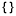Task Script
- Displays the script associated with the selected task. The script will only be visible to trusted users.
Sidebar - Left
The sidebar displays a list of available instances of KosmicTask. You may hide or reveal the view using the Sidebar toolbar button.
- Home
- Represents the instance of KosmicTask on your local machine. It should always be available.
- Shared
- Lists the instances of KosmicTask available on the network. Local network instances will be discovered automatically. You may also connect manually to external networks.
Getting Started
KosmicTask uses a publishing idiom to control who has access to particular tasks. When a new task is created it is initially accessible only to trusted users. To make a task available to all users it must be published.
KosmicTask operates in three different modes, selectable via the task mode control in the tool bar.
- Public Task Mode
- Allows access to published tasks. By default all instances of KosmicTask, both local and remote, can access public tasks. This is the default task mode.
- Trusted User Task Mode
- In order to access all tasks, on either a local or remote instance of KosmicTask, select the trusted user task mode. KosmicTask prompts for a valid username and password and on successful authentication provides access to all tasks.
- Configuration Mode
- In order to create, edit, delete, publish and unpublish tasks select the configuration task mode. As in the case of the trusted user mode you will be required to authenticate.
Running a Task
- Select a task from the browser.
- If the task has inputs they will be displayed below the task name in the left task view. Enter any required values.
- Click the run toolbar button or select menu item Task - Run (command-R).
- The task will execute and the results will be displayed in the right task pane.
The task may be paused or stopped prematurely as required.
Viewing Task Results
The results for a task will be displayed in the right hand task view. Results may be displayed in a number of different formats using the navigation bar format controls:
- Document
- Displays results as a document. A popup control enables formatting as text, XML, or plist.
- Icon
- Displays a representative image of file results. A QuickLook preview will often be available.
- List
- Displays results as a hierarchical list.
- Script
- Displays results as returned by the script.
It may not be possible to display some or all of a particular result set in every format. KosmicTask will display whatever portion of the results are compatible with the selected format.
Saving Task Results
Results may be saved to disk or sent directly to another application. Select the gear icon in the bottom left corner below the results view. Alternatively right (or ctrl-left) click in the results view to display the results menu.
- Save Result
- Save the result text as plain text, PDF, RTF, property list or XML.
- Save Result Files
- Save any files returned by the task.
- Send Result To
- Send the result text to either Excel, Mail, Pages, TextEdit or Word.
These results processing features are implemented as a series of extensible plug-ins.
Publishing a Task
You may publish a task to make it visible to all users or un-publish it to restrict access only to trusted users who can authenticate.
- Select the configuration task mode and enter password and user name if required.
- In the task browser check the checkbox next to a task name to publish it.
- Clear the checkbox to un-publish a task.
- You may publish/un-publish groups of tasks using the Group table checkboxes.
- Leave configuration mode by selecting either public or trusted user mode. You will be prompted to either save or discard your configuration changes.
Working with Tasks and Results
KosmicTask provides flexible management of your tasks and results with the aim of providing an efficient workflow that makes it easy to manage multiple tasks and numerous result sets. Features are provided to enable the results of one task to be easily retrieved as input for another.
Tasks
A task runs within a tabbed instance of the task pane. You may run multiple tasks at once, either locally or remotely, and each task will run in its own tabbed task pane. Each tab also maintains a history of the tasks that were run within it and the results that were returned.
When a task is selected in the task browser it will replace the task in the current task view except in the following cases:
- Task already exists in another view
- The existing task will be selected.
- Current task view is running a task
- A new task view will be created.
- Current task view is pinned
- Pinning prevents a task from being replaced. A new task view will be created.
The above behaviour may be modified using the task browser context menu. Alternatively use command-click to open the task in a new tab and option-click to open in a separate task window. A task window is merely a detached instance of a task view. You may also detach a task view as a separate window using the task navigation bar.
Results
Many tasks will produce displayable results though some may not. In these cases an informational message will be displayed.
KosmicTask includes an integrated file transfer capability that it makes it easy to return the contents of a file as a result.
Results may consist of two types of data: textual data and file data
- Text result type
- The task returns data that can de displayed as text. The script may have returned a string, number, alias, list or record. KosmicTask will attempt to display all the available data as text.
- File result type
- The task returns data that is to be interpreted as the contents of a file. KosmicTask will display an icon representing the file contents in its icon view and use QuickLook to display the actual contents if possible.
A script may return a result that contains both textual data and file data. In addition the script may return multiple instances of file data representing multiple files and file types.
Navigation Bars
The navigation bars appears along the top of each task view. There is one for the input view and one for the results view.
Input View Navigation Bar
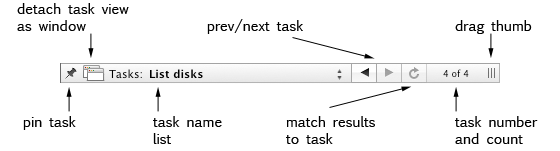
- Pin task
- Keep task permanently in view. Task cannot be replaced by another.
- Detach task view as window
- Detach the task view tab (inputs and results) and display as a window.
- Task name and list
- Name of the currently displayed task. Click to display list of all tasks that have been run in the view. Select ready to clear existing results.
- Prev/next task
- Select previous/next task in task name list.
- Match results to task
- Match displayed results to current task. Result list will be displayed in red if results do not match.
- Task number and count
- The current position of the task within the task list and the total number of tasks run.
- Drag thumb
- Task split view drag thumb.
Results View Navigation Bar
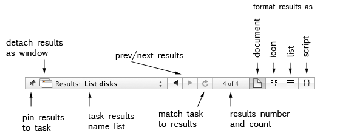
- Pin results to task
- When pinned the task and results always correspond. Un-pin to allow independent display of tab tasks and results. This is useful when using the results of one task as input to another.
- Detach results as window
- Detach a copy of the task results view and display as a window
- Task results name list
- Name of the currently displayed task results. Click to display list of all results that have been obtained in the view. Select ready to clear.
- Prev/next results
- Select previous/next results in the list.
- Match task to results
- Match displayed task to current results. Results list will be displayed in red if displayed task does not match displayed results.
- Results number and count
- The current position of the results within the results list and the total number of results obtained.
- Document
- Format results as a text document.
- Icon
- Format results as icon or image. Only applies to files returned within the results. If a QuickLook preview of the files contents is available then it will be displayed. Otherwise a generic icon will be used.
- List
- Format results as a hierarchical list.
- Script
- Format results as they were returned by the script. This is useful if you want to incorporate the results directly into another script.
Task Status View
The task status view displays the progress of the task's execution. Each task will progress through several stages:
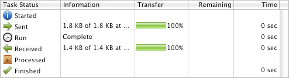
- Ready
- The task has yet to be run.
- Started
- The task has been requested to run.
- Sending...
- The task request is being sent along with its input data. If the input contains file data then the contents of the file(s) are sent. Transfer progress is displayed.
- Sent
- The task request was successfully sent and acknowledged.
- Running..
- The task is currently running.
- Run (complete)
- The task has finished running and will send back its results.
- Receiving...
- The task response is being received along with any results data. If the results contain file data then the contents of the file(s) are sent. Transfer progress is displayed.
- Received
- The task results have been received.
- Processing..
- The task results are being processed.
- Processed
- The task results have been processed.
- Finished
- The task has finished without errors.
If an error is encountered then a warning status alert will be displayed and the task will be stopped. To find out more about the error condition open the console using menu item Window - Console (or Command-L).
Task History View
The task history displays a list of all the tasks that have been requested on both local and remote machines.
- To run a previous task select it from the history list.
- If the task has inputs they will also be retrieved from the history.
- Results are not saved into the history.
- Tasks that were requested on machines that are not currently available will display a greyed out icon
Task Script View
The task script view displays the actual script text that will be executed for a given task.
- Script text will only be displayed for trusted users. Enter trusted user task mode in order to enable script viewing.
- Scripts are read only. To modify the script enter configuration task mode and select edit from the toolbar.
Searching
Spotlight powered task searching is available for both local and remote instances of KosmicTask. Enter a search term into the Search toolbar control and press Enter to begin the search. The browser pane will display the task search results view. To run a task select it from the search results.
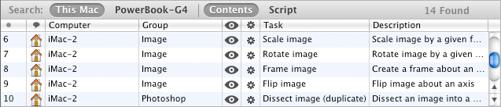
Search view options:
- This Mac
- Search the local machine only.
- Machine 1, Machine 2, ...
- Search a named remote machine.
- Shared
- Search all remote machines.
- Contents
- Search all the contents of the task.
- Script
- Search for script keywords only in the task.
The search facility depends upon Spotlight being enabled on all machines. Searching on Internet connected machines is fully supported.
The returned search results always correspond to the prevailing task mode. So only publicly available task matches will be returned when public task mode is selected. If more matches are available in trusted user mode then a + will be appended to the reported number of search results found. So 0 Found + means that 0 public task matches were found but that some matches were found for trusted user mode.
Networking and Communications
Tasks are utilised and managed on remote instances of KosmicTask in the same way as local tasks. The sidebar lists:
- All the currently reachable instances of KosmicTask.
- The current task mode (displays task mode icon except for public mode which is left blank).
- The number of available tasks (colour coded to the task mode).
- Connectivity problems. Alert symbol displayed. See the application console log for detail.
Managing Connections
Bonjour is used to achieve automatic discovery of local network instances of KosmicTask. Should you wish to connect to a local instance that does not have Bonjour configured or to a remote IP or Internet based instance then click the + button at the foot of the sidebar.
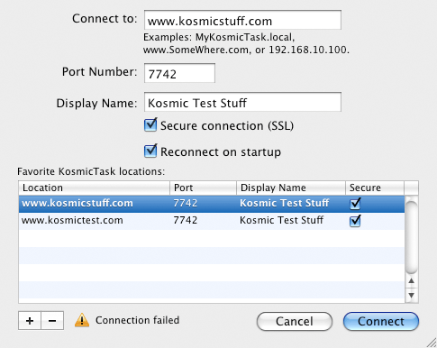
- Connect to
- Domain name or IP address to connect to. Connection will only succeed if the target machine is accessible at the port specified below and is running a copy of KosmicTask.
- Port number
- KosmicTask defaults to using registered TCP port number 7742.
- Display name
- Friendly name for IP connections.
- Secure connection (SSL)
- The connection uses secure transport. Selection must match setting on connection target machine.
- Reconnect on start-up
- The manual connection will be reinstated on start-up if the connection is added to the favourites list.
- Favorite Kosmic Task Locations
- A persistent list of favorite locations.
To disconnect from a manually established connection click the - button at the foot of the sidebar
Internet Sharing
An integrated port mapper is included to facilitate easy access to KosmicTask from the Internet. By default Internet sharing is disabled. The current Internet sharing status is displayed in the bottom right hand corner of the application window.
When enabling Internet sharing you should be aware that all public scripts will be available to any user who connects via the Internet. If in doubt about this un-publish all of your tasks so that users are forced to authenticate. Always ensure that SSL encryption is selected when enabling Internet sharing (see application Preferences - Security).
To enable Internet sharing click the Internet status display or select the Internet tab in the preferences panel at KosmicTask - Preferences. Note that the automatic sharing facility requires a UPnP or NAT-PMP compliant router. In the absence of this a manual router configuration will be required in order to accept incoming external requests.
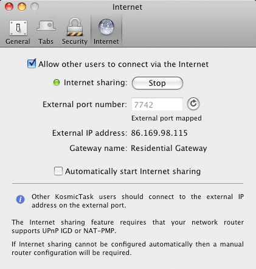
- Allow other users to connect via the Internet
- Enable external users to connect via the Internet. Click Start to begin sharing and Stop to end. If the operation is successful the sharing indicator will turn green. Otherwise an error condition will be reported.
- External port number
- The TCP port number on which the router should accept external connections. By default all instances of KosmicTask use this port for local and remote network communication.
- External IP address
- The external IP address of your router. Remote KosmicTask users wishing to connect should enter this IP address into the Connect to field of the connections panel.
- Gateway name
- Router/gateway name as reported by router.
- Automatically start Internet sharing
- Internet sharing will start automatically whenever KosmicTask is launched. Defaults to off
Manual Router Configuration
Consult your router documentation to determine how to open an external port (7742) and direct it to the local IP of your machine on port 7742. Should you need to obtain your local network IP address you can consult
System Preferences-Network (select the connected interface - Airport, Built-in Ethernet etc).
Security
By default all communications to and from KosmicTask are encrypted using SSL (TLS v1) to ensure privacy. This applies to local, remote and Internet based communication. If the application is being used in a single user or trusted environment then the encryption can be disabled if performance/network throughput has to be maximised. A closed padlock icon in the top right of the application windows indicates that a secure connection is currently in use.
Note: A KosmicTask hosted script has the capability to obtain data from many application and operating system sources. This data may be of a personal or sensitive nature. It is therefore important that the SSL encryption remains enabled so that data transmitted over public networks cannot be observed. Only disable the encryption if you are using KosmicTask in a private or secure network environment.
Security settings can be found on the Preferences - Security tab.
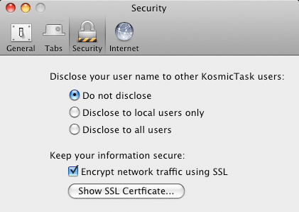
- Disclose your username to other KosmicTask users
- By default your user name will not be visible to other KosmicTask users in the sharing information browser view. You may optionally disclose your user name only to local users or to all users. When logging in to remote instances of KosmicTask a valid user name and password combination may be required.
- Keep your information secure
- SSL encryption is enabled by default and is the recommended configuration.
- Show SSL Certificate
- SSL encryption requires a digital certificate in order to establish a secure connection and to maintain the integrity of that connection. By default KosmicTask will generate a suitable self signed root certificate and store it in the Keychain for future use. The fact that the certificate reports "This root certificate is not trusted" is not indicative of an error or problem. It merely highlights the fact that the certificate is a self signed root and was not issued by a root authority such as Thawte, VeriSign or Comodo. KosmicTask uses the certificate solely to enable encryption not to establish a trust relationship.
Password Security
All entered user passwords, for either the local or remote instances of KosmicTask, may be saved into the system Keychain for secure storage and easy retrieval. KosmicTask relies upon SSL encryption being enabled in order to maintain password security over the network. If you disable the default encryption then your password may be retrievable from the network data stream.
Managing Tasks
Enter configuration mode in order to create, edit and manage tasks. You may configure and manage both local and remote instances of KosmicTask in the same manner.
Configuration mode functionality:
- Publish a task
- Un-publish a task
- Create a task
- Edit, compile and test a task
- Duplicate a task
- Delete a task
- Manage task groups
- Assign task ratings
- Assign task labels
Task Types
There are two types of tasks:
- Applications Tasks
- Tasks provided by default and intended to serve as example material and as templates for user tasks. Application tasks cannot be directly edited or deleted. Duplicate an application task to create an editable user copy.
- User Tasks
- User defined and created tasks.
The task type icon precedes the task name in the task browser.
Task Operations
- Create a task
- Select New from the tool bar or menu item File - New (command-N). The task edit window will open.
- Edit a task
- Select Edit from the tool bar or menu item File - Edit... (command-E). The task edit window will open. A duplication prompt sheet will be displayed if an application task is selected for editing.
- Duplicate a task
- Select Duplicate from the tool bar or menu item File - Duplicate (command-D). The Task edit window will open containing a mutable copy of the selected task.
- Delete a task
- Select Delete from the tool bar or menu item File - Duplicate (command-delete).
Task Names and Groups
Tasks may be assigned to groups for easy management and browsing. To assign or modify the icon associated with a group right click on the group name and select Group Icon... from the context menu. Groups may be published and unpublished as a whole.
Each task requires a name but there is no requirement that this name be unique throughout the application. When a task is duplicated an identifying tag is appended to the task name. The duplicated task name can be modified as required.
Task Ratings and Labels
Tasks may be rated and labelled to assist with classification and identification. Right click in the task browser to display the context menu.
- Rating
- A value from none to 5 stars.
- Label
- A finder style coloured label.
How Task Scripting Works
KosmicTask subdivides the process of creating and editing tasks into three different stages.
- Defining the task's configuration and parameters.
- Editing and compiling the task.
- Testing the task.
Once you have finished defining, editing and testing your task you will be prompted to save it, at which point it will be added to the task browser list. You can create, edit, compile and test tasks on both the local and remote machines.
Defining the Task
Create or edit an existing task. The task edit window will open.
Task Detail: the left hand view.
Your task needs to have a name and it needs to belong to a group. Note that the task name does not have to be unique. You may also enter a short and long description for your task. This information will be visible to the user when the task is run. You may also enter additional information about the task's author.
Script Detail: the right hand view.
Each task has an associated script. When the task is run a routine (or handler) within the script is called. KosmicTask supports 4 handler definitions:
- run script
- Calls the implicit run handler or explicit run handler of the form on run. This definition does not support parameters.
- run script with parameters
- Calls the explicit run handler of the form on run{}. This definition supports optional parameters. Note the use of { }.
- call default handler
- Calls the default application handler of the form on kosmicTask(). This definition supports optional parameters.
- call user defined handler
- Calls a user defined handler. This definition supports optional parameters.
Simple scripts, such as the following, may make use of the implicit run handler when no script parameters are required. In this case no actual entry handler is defined within the script and execution begins at the outermost statement.
display dialog "Implicit run handler called"
You may alternatively define an explicit run handler with optional arguments:
on run{}
display dialog "Explicit run handler called"
end run
KosmicTask defaults to using a handler named kosmicTask. The use of this handler makes it explicit within the script where KosmicTask execution will begin.
on kosmicTask()
display dialog "Default run handler called"
end kosmicTask
Lastly you may define a custom handler.
on myHandler()
display dialog "Custom run handler called"
end myHandler
Some tasks do not require any additional user input. For example, a task to empty the trash may not need any additional input information. But a task that is going to merge two images together certainly will.
To add or remove input parameters to your task select the + and - buttons.
Each input requires a name and a description. Again, this information is used to provide feedback to the user when the task is run.
Each input also requires a type. KosmicTask provides support for the following input parameter types:
- Text - sends text to your task.
- Number - sends a number to your task.
- Date - sends a date to your task.
- List - select an item from a list and send it to your task.
- File contents - select a file and send its content to your task.
You may add as many inputs of whatever type to your task as you required. Each input can be generally configured with an initial value. KosmicTask implements these inputs as loadable bundles so that different input types can be added as required.
Once the task handler and parameters have been defined enter your script in the Edit Task Script view. In order for the script to be callable by the task it must contain the handler routine that you previously defined.
Once you have edited you script text click the compile button. You should be aware that you can readily edit and compile your scripts from another networked machine. In such a case your script is sent over the network, compiled and the result returned. You do not need to target the remote machine in your script as the script will be executed remotely. Once the script is complete and compiles correctly you can test it in the Run Task view.
Note that although you can run and test your task in the Run Task view like any other script it has not yet been saved and will not display in the task browser. To save the task select menu item File - Save (command-S) or close the edit window.
Task Results
Your task script may return one of the following AppleScript data types and KosmicTask will display it appropriately.
- Boolean
- Integer
- Real
- Date
- String
- File
- List
- Record
If you need to return more than one value use either a list or record.
return {message:"done", time:1.5}
Returning the Contents of a File
In some situations you may wish to return the actual contents of a file rather than a string data containing a file path name. This can be achieved by returning a record type containing an item named kosmicFile. So if you have a file whose path is stored as myFilePath you can simply return the contents of that file with:
return { kosmicFile:myFilePath}
If you want to return the contents of more than one file simply return a list of file paths:
return { kosmicFile:{myFilePath, anotherFilePath}}
If you want to return value data along with the file contents then simple define other record items:
return { kosmicFile:{myFilePath, anotherFilePath}, info:"2 files"}
Styling Results
KosmicTask supports the styling of results using standard CSS properties and values. We identify the data to be styled using the kosmicData record name and define the CSS styling string using the kosmicStyle record name.
return {kosmicData:"Make me big and red", kosmicStyle:"color:red;font-size:120%"}
Which will result in:
Make me big and red
Styling can be applied to all data types. In the case of lists and records the styling will cascade down to any enclosed types unless it is overridden by another kosmicStyle item.
set theRebel to {kosmicData:"Not me, I want to be red", kosmicStyle:"color:red"}
set myResult to {"I want to be blue", "Me too", "True blue", theRebel}
return {kosmicData:myResult, kosmicStyle:"color:blue"}
Which will result in:
I want to be blue
Me too
True blue
Not me, I want to be red
To view all tasks that use styling enter "kosmicStyle" into the application search field.
CSS Styling Properties
The following CSS properties and values are supported within kosmicStyle named value strings:
- color, background-color
- named colors (white, black, aqua, blue, gray, green, fuchsia, lime, maroon, navy, olive, purple, red, silver, teal, yellow)
- color hex eg: #FFFFFF
- color rgb eg: rgb(255,255,255)
- font-size, line-height
- pt, px, em, %
- font-weight
- normal, bold
- font-style
- normal, italic
- text-decoration
- none, underline
Creating and Editing Tasks
Task edit window layout:
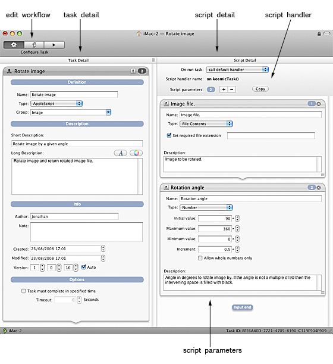
The task edit window supports three different views as selected by the edit workflow control.
- Configure Task
- Configure the task detail and define the script handler and any required input parameters.
- Edit Task Script
- Edit and compile the task script.
- Run Task
- Run and test the task.
Configure Task Detail
Configure task definition and descriptive information.
- Definition
-
- Name: the task name as displayed in the task browser.
- Type: the script type. Currently AppleScript only.
- Group: the task's container group. Select an existing group or enter a new group name.
- Description
-
- Short Description: short description as displayed in task view.
- Long Description: long description. Supports attributed text. Images may be dragged and dropped. Useful for more complex tasks were comprehensive instruction needs to be provided to the user.
- Info
-
- Author: Task author.
- Note: Author note. Original script source, references etc.
- Created: Task created date.
- Modified: Task modified date.
- Version: Task version. Can increment automatically with each save.
- Options
-
- Task must complete in specified time: Set task timeout. If task does not complete in specified time it will be automatically terminated.
Configure Script Detail
Configure script handler and optional parameters.
- Script Handler
-
- On run task: the name of the script subroutine or handler to be called when the task is run.
- Script handler name: the name selected above.
- Script parameters: the number of parameters to be passed to the script.
- Copy: copy the script name and parameter list. This can be pasted directly into the script.
- Script Parameters
- A list of defined parameters, types and defaults. Use the + and - buttons to add and remove parameters. Parameters may also be deleted using the x button in the parameter title bar.
Edit Task Script
Edit task script window layout:
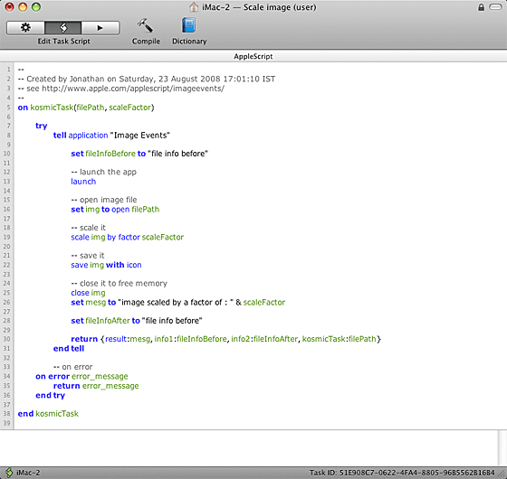
- Compile
- Compile the script. Scripts for remote machines will be dispatched for compilation on the remote machine.
- Dictionary
- Display dictionaries for applications on the local machine. Dictionaries for remote machines are not available.
Run Task
A task view in which to run and test the task.
Preferences, Feedback and the Console
To display the preferences panel select the application menu item KosmicTask - Preferences...
General
- Publish my tasks when I log in
- The KosmicTask server agent will start as soon as you log in so that your tasks become available over the network. The main KosmicTask application and window will not start.
- Check for application updates at startup
- The application will check for updates at startup. If an update is found you will be prompted to install it. You may check for updates manually using the application menu item KosmicTask - Check for Updates...
Tabs
- Command-click opens a task in a new tab
- Enables click opening of tasks in new tabs.
- Alt-click opens a task in a new tab
- Enables click opening of tasks in new windows.
- Confirm when closing multiple tabs
- Enable confirmation message.
Security
The security tab is described here.
Internet
The Internet tab is described here.
Feedback and Support
We welcome all feedback and comments with regard to KosmicTask. Good or bad, we would like to know!
To display the feedback panel select the blue feedback icon in the top right hand corner of the title bar or select the application menu item KosmicTask - Feedback and support...
Using the feedback panel you can:
- Ask a support question.
- Send us an application feature request.
- Send us a bug report.
You may optionally include your email address if you require a reply. The feedback is sent directly to Mugginsoft and does not utilise email.
The Console
To display the console window select menu item Window - Console or keyboard shortcut command-L.
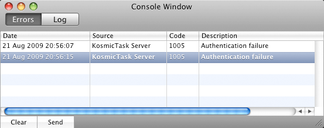
- Errors
- Displays a list of application errors including the error source and code. More information on a particular error may be available in the log.
- Log
- Displays a real time log of informational, diagnostic and error messages relating to KosmicTask.
- Clear
- Clears both the error list and the log.
- Send
- Sends the contents of the console window to Mugginsoft support via email. Use this facility to report bugs and problems. Alternatively copy and paste the log contents into the feedback panel.
Licensing
To display the Licences panel click application menu item KosmicTask - Licences...
KosmicTask ships with a default trial licence file that provides limited functionality for application appraisal purposes. A full licence must be installed to enable all application features.
- Available Licences
- Lists the currently installed licences.
- Licence Details
- Lists the information contained within the licence.
- Buy Licences...
- Buy licences from the Mugginsoft website.
- Remove Licence
- Remove selected licence. If all full licences are removed the application will revert to trial functionality.
- Add Licence...
- Select a licence file to install it. KosmicTask licence files end with the extension .ktlic. Aternatively, you may install a licence by double clicking the licence file in the finder.
Notes
Updated 13th April 2010
Code syntax highlighting generated using GeSHi